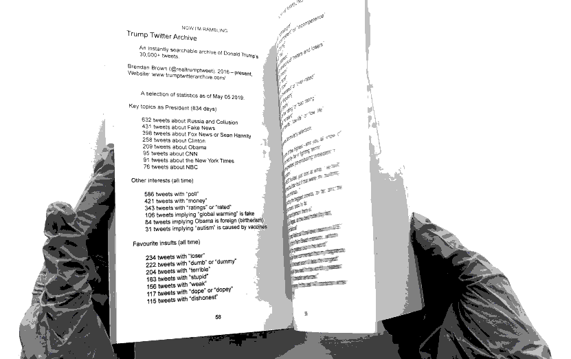
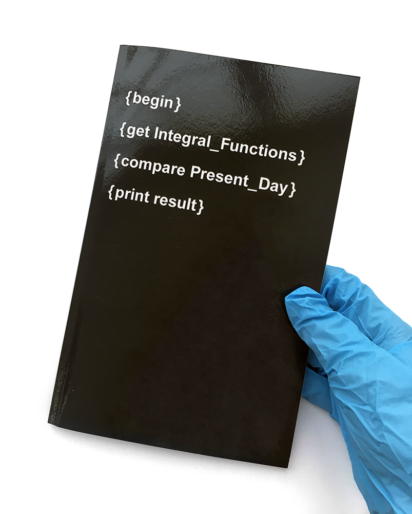

/ / / / / / / / / / / / / / / / / / / / / / / / / / /
Integral_Functions/Present_Day
/ / / / / / / / / / / / / / / / / / / / / / / / / / / / / / /
AUD $6.76
/ / / / / / / / / / / / / / / / / / / / / / / / / / / / / / / / /
References
Integral Functions. E-zine.
Published January 15 1996–October 31 1996.
Archived at: http://web.textfiles.com/ezines/IF/
(Deleted user) “While you were partying, I studied the blade.” Published January 26 2016, /r/justneckbeardthings (Reddit). Imgur: https://imgur.com/CyFyMRL
@addison_angelo. “the videos my sister sends me of her and her friends.....” Published July 25 2017, Twitter: https://t.co/NnkpZrlShA
Clinton Nguyen. “An Attempted Suicide Forced a Tumblr Community to Open Its Eyes About Bullying.” Published November 7 2015, Motherboard (VICE Media): https://motherboard.vice.com/en_us/article/3da838/an-attempted-suicide-forced-a-tumblr-community-to-open-its-eyes-about-bullying
Anders Hellberg. “Greta Thunberg, outside the Swedish parliament.” Published August 27 2018, Wikimedia Commons: https://commons.wikimedia.org/wiki/File:Greta_Thunberg_4.jpg
{kind=link}
Julian Meehan. “Melbourne School Strike for Climate Action 2.” Published November 30, 2018, Flickr: https://flic.kr/p/R7UUPd
Takver. “Climate change is worse than homework - Melbourne climate strike.” Photo taken March 15, 2019. Flickr: https://flic.kr/p/2fcgGj6
Robb Wilson. “L.A. Stands With Emma Too.” Photo taken February 19 2018, Flickr: https://flic.kr/p/24wDZby
Mike Licht. “Stop the NRA, March for Our Lives.” Photo taken March 24 2018, Flickr: https://flic.kr/p/25oVv6o
Joseph Menn. “Beto O’Rourke’s secret membership in America’s oldest hacking group.” Published March 15 2019. Reuters Investigates.
Ben Fredericson. “Mask.” Published September 18 2009, Flickr (deleted). Wikimedia Commons: https://commons.wikimedia.org/wiki/File:Guy_Fawkes_Mask.jpg
{kind=link}
Brian Krebs. “Who’s in the Lizard Squad?” Published December 14 2014, Krebs on Security (Blog): https://krebsonsecurity.com/2014/12/whos-in-the-lizard-squad/
AICAN + Ahmed Elgammal. “Faceless Portrait #3” from Faceless Portraits Transcending Time. Published in catalogue 2019, website: https://www.aican.io/
Ian Bogost. “The AI-Art Gold Rush Is Here.” Published March 6 2019, The Atlantic: https://www.theatlantic.com/technology/archive/2019/03/ai-created-art-invades-chelsea-gallery-scene/584134/
Max Kreminski. “blackout poetry generator.” Published c. 2017, Website: mkremins.github.io/blackout/
Samantha Cole. “We Are Truly Fucked: Everyone Is Making AI-Generated Fake Porn Now.” Published January 25 2018, Motherboard (VICE Media): https://motherboard.vice.com/en_us/article/bjye8a/reddit-fake-porn-app-daisy-ridley
Aja Romano. “Reddit finally bans its forum for creepy fake celebrity porn.” Published February 8 2018, Vox: https://www.vox.com/culture/2018/2/8/16987098/reddit-bans-deepfakes-celebrity-face-swapping-porn
Samantha Cole. “AI-Assisted Fake Porn Is Here and We’re All Fucked.” Published December 12 2017, Motherboard (VICE Media): https://motherboard.vice.com/en_us/article/gydydm/gal-gadot-fake-ai-porn
(Unknown origins). “based and redpilled.” Phrase that was popular on 4chan and Reddit in 2018.
Tim Squirrell. “A definitive guide to Incels part two: the A-Z incel dictionary.” Published May 31, Website: https://www.timsquirrell.com/blog/2018/5/30/a-definitive-guide-to-incels-part-two-the-blackpill-and-vocabulary
Anonymous 4chan user. “Virgin Signs.” Published April 23 2016, 4chan. Know Your Meme: https://knowyourmeme.com/memes/virgin-vs-chad
(Unknown author). Photo of Eurydice Dixon. Originally posted to Facebook. ABC News: https://www.abc.net.au/news/2018-06-15/comedian-eurydice-dixon/9873104
Ruba Photography. “Aiia Maasarwe.” Photo of Aya Maasarwe. Originally posted to Instagram. ABC News: https://www.abc.net.au/news/2019-01-22/aiia-maasarwe-peace-sign-3/10735468
(Unknown author). Photo of Jill Meagher. Originally posted to Facebook page Help Us Find Jill Meagher. ABC News: https://www.abc.net.au/news/2016-05-27/abc-radio-employee-jill-meagher/7455384
David A. Fahrenthold. “Trump recorded having extremely lewd conversation about women in 2005.” Published October 8 2016, The Washington Post: https://www.washingtonpost.com/politics/trump-recorded-having-extremely-lewd-conversation-about-women-in-2005/2016/10/07/3b9ce776-8cb4-11e6-bf8a-3d26847eeed4_story.html?utm_term=.934a2f272f86
Brendan Brown. “Trump Twitter Archive.” Published c. 2016, Website: http://www.trumptwitterarchive.com/
@peepeeplayhouse. “i Amn just........... a litle creacher. Thatse It . I Canot change this” Published September 18 2018, Twitter: https://twitter.com/peepeeplayhouse/status/1042290672621936642